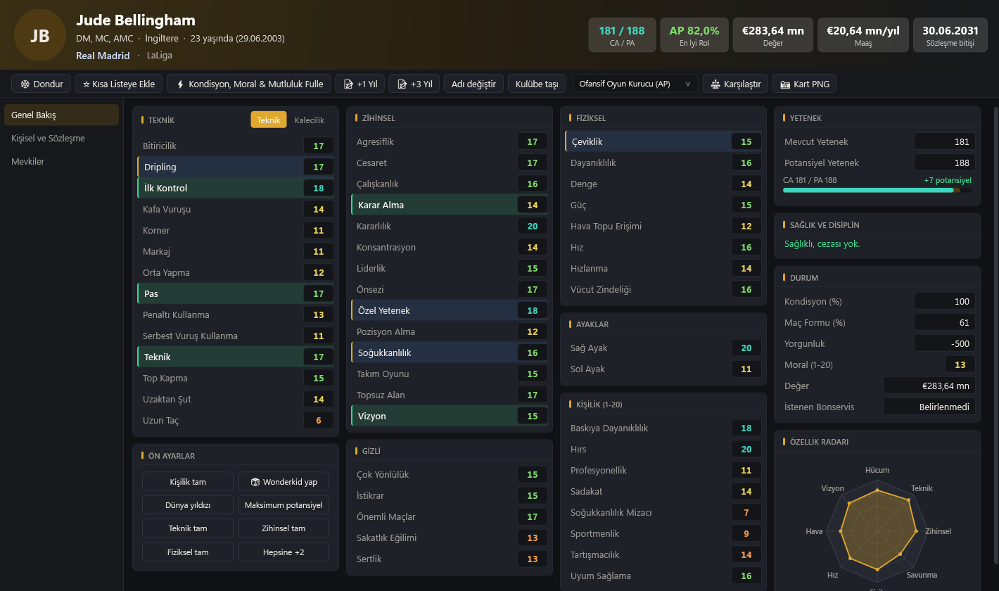

Tamamen ücretsiz mi?
- MIT lisansı altında %100 ücretsiz ve açık kaynaklıdır.
- Lisans anahtarı, abonelik, reklam veya kilitli özellik yoktur.
- Tüm kaynak kodunu GitHub üzerinden dilediğiniz gibi inceleyebilirsiniz.
Oyun açıkken oyuncuları, personelleri, kulüpleri ve finansı anında düzenleyebilir; gerçek regenleri ve 5 yıldızlı antrenörleri zahmetsizce bulabilirsiniz.
Kurulum gerektirmez, tek dosya olarak çalışır.

Oyuncu aramadan personel transferine, kulüp tesislerinden canlı tema geçişine kadar tüm araçlar tek çatı altında.
Dört basit adımda kariyerinize bağlanıp güvenle kullanmaya başlayabilirsiniz.
Önce Football Manager 27'yi başlatıp düzenlemek istediğiniz kariyer kaydını yükleyin.
İndirdiğiniz dosyayı açın; program açık olan FM27'yi otomatik algılayıp saniyeler içinde bağlanır.
Büyük bir değişiklik yapmadan önce üst bardaki Yedek butonuna basarak kaydınızı güvenceye alın.
Yaptığınız her işlem anında oyuna yansır; vazgeçerseniz Ctrl+Z ile anında geri alabilirsiniz.
Mac'i kapatıp güç tuşuna basılı tutarak Kurtarma moduna girin. Üst menüden İzlenceler → Terminal'i açıp şu komutu yazın ve yeniden başlatın:
csrutil enable --without debug
İndirdiğiniz .zip'i açıp SquadEditor.app'e çift tıklayın. macOS ilk kez güvenlik uyarısı verirse şu menüden onaylayın:
Football Manager 27'yi başlatıp incelemek veya düzenlemek istediğiniz kariyer kaydınızı yükleyin.
Mac şifrenizi girerek canlı bağlantıyı onaylayın. Masaüstü penceresi doğrudan açılır; ⌘Z ile her değişikliği geri alabilirsiniz.
Ayarlardan dilediğiniz dili seçip kullanabilirsiniz.
Squadeditor, Football Manager topluluğu için tamamen ücretsiz ve açık kaynaklı bir alternatif sunmak amacıyla geliştirildi. Karmaşık arayüzler ve ücretli duvarlar olmadan; hızlı çalışan, kayda zarar vermeyen ve gerçekten oyuncunun işini gören bir araç olmasını hedefledim.
Eklememi istediğiniz bir özellik, hoşunuza gitmeyen bir detay, öneri, şikayet veya memnuniyetiniz olursa sosyal medya hesaplarımdan ya da GitHub üzerinden bana doğrudan ulaşabilirsiniz.
Güvenlik, kurulum, uyumluluk ve doğrulama hakkında bilmeniz gereken her şey.
SHA-256: 217A5FB4…1A4EFA
VirusTotal Raporu
csrutil enable --without debug
Windows ve macOS için kurulum gerektirmez ve tamamen ücretsiz.